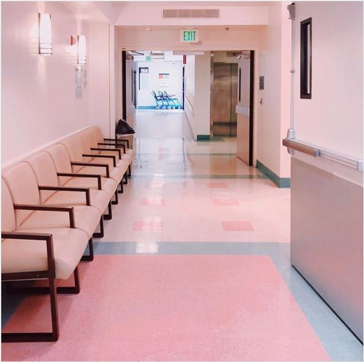

Sobre Nosotros
Bienvenido al Consultorio Medico Lily. nos dedicamos a mantener a las familias sanas y felices con nuestro buen servicio medico.
¡Llevamos más de 15 años de experiencia, ofreciendo calidad y atención personalizada para cada uno de nuestros pacientes!.
